2. 下载并安装 Locale Emulator 转区工具。右键点击安装程序，选择“以管理员身份运行”，按照提示完成安装。
该工具能让你在中文系统下正常使用日文编码的录音软件，避免乱码问题。
1. 准备一台 Windows 系统 的电脑，以及一副带麦克风的耳麦耳机。建议使用头戴式耳机以减少录音时的背景噪音。
2. 下载并安装 Locale Emulator 转区工具。右键点击安装程序，选择“以管理员身份运行”，按照提示完成安装。
该工具能让你在中文系统下正常使用日文编码的录音软件，避免乱码问题。
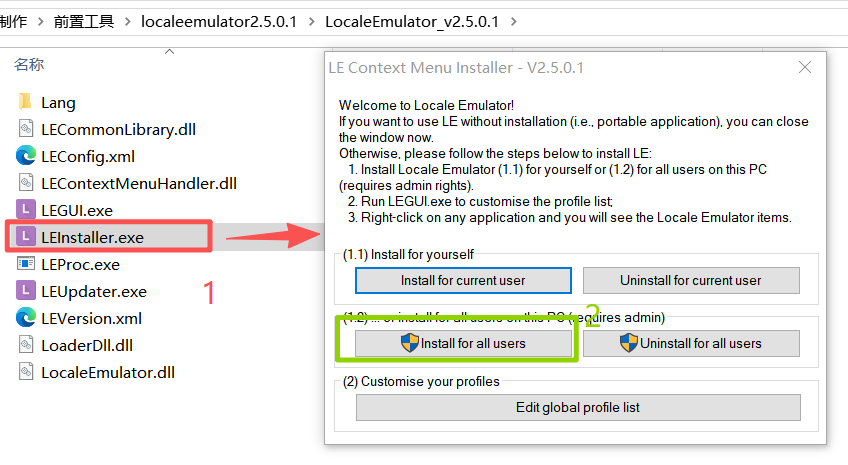
3. 安装完成后，重启电脑。这一步非常重要，否则转区功能可能不会生效。
4.
准备录音时使用的 BGM（背景音乐）。我们提供三种速度的节拍音轨：120 BPM、130 BPM、140 BPM。除非角色设定中有特别注明，否则请统一使用 120 BPM 的版本。
我们选用的OneNoteJazz适合录制7或8音节的连续音。
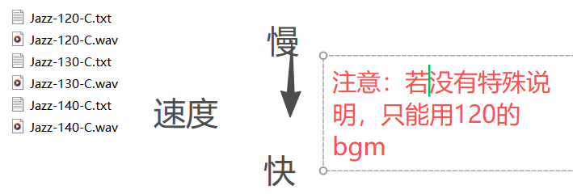
5. 解压录音工具 Oremo 的压缩包，然后右键点击 oremo.exe，通过 Locale Emulator 运行（菜单中会出现“以此程序配置运行”或类似选项）。
成功启动后，你应该能看到 Oremo 的主界面，此时所有菜单文字均为日文显示，说明转区成功。
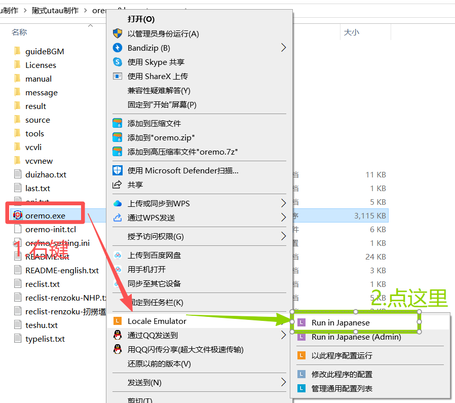
1. Oremo 界面讲解
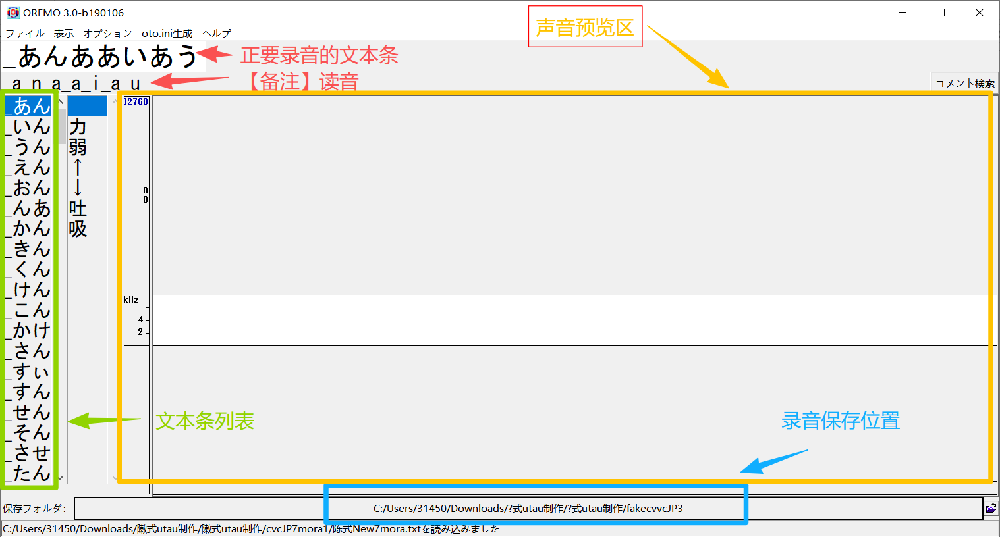
2. 选择录音文件夹（建议将 Oremo 和录音文件夹都移到桌面，路径使用纯英文）
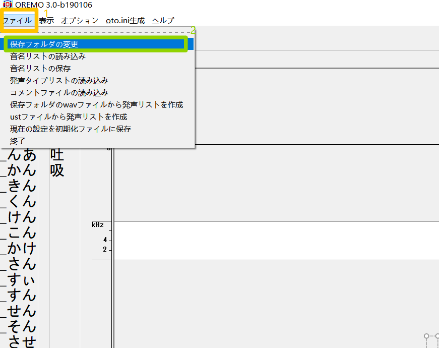
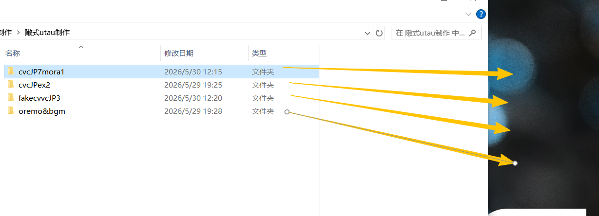
左图：文件夹在桌面 / 右图：在 Oremo 中选择该文件夹
3. 选择录音表
在录音文件夹中，我已放好了录音表（.txt 文档）。请选择没有写 “comment” 的那个 txt 文件，它通常就是纯净的录音列表。

4. 基础设置配置（点击菜单“设置”或齿轮图标）
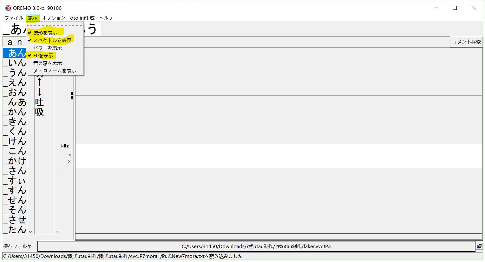
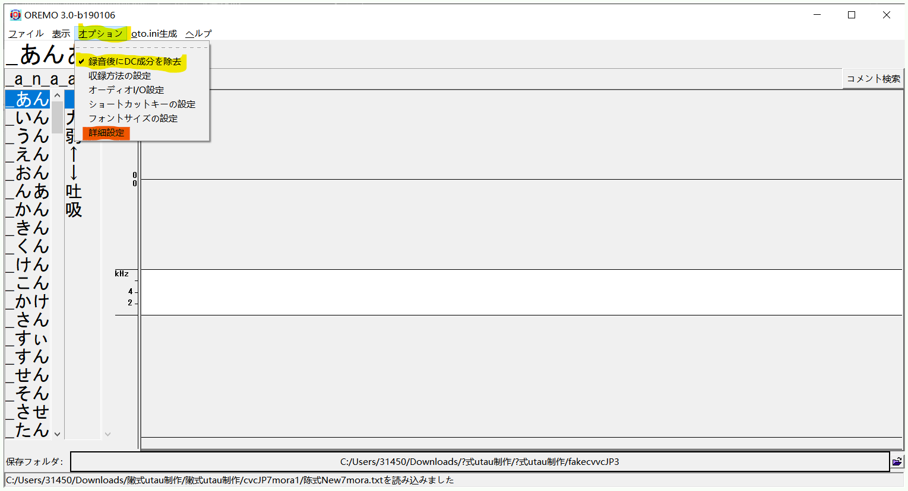
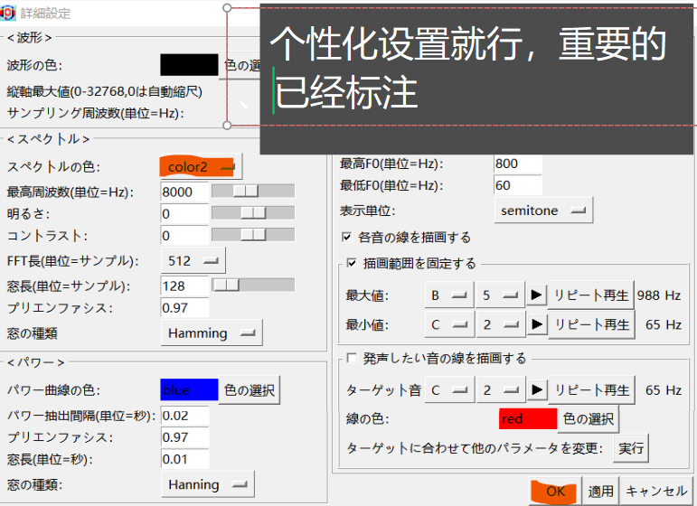
依次需要调整的三处重要设置（采样率、声道、录音模式等）
5. 选择录音方式
方式 1：每录完一条自动停止，手动点击下一条（适合新手）。
方式 2：录完一条后自动跳转到下一条（适合熟练后批量录制）。
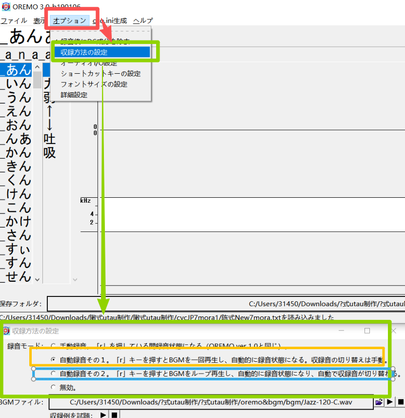
6. 按键与快捷键
🎤 开始录音/截止录音：R
🔊 试听当前录音：空格
💾 保存录音文件：Ctrl + S
⬆️⬇️ 切换上/下一条文本：↑ ↓ 方向键
7. 录音 BGM 怎么踩点？
试听下方音频，感受错误与正确的区别：
节奏忽快忽慢，没有对准节拍
录音时发出了其他声音（咳嗽、碰撞）
声音干净，每个音节稳稳落在拍子上
8. 音频展示区的三张图怎么看？
响度图：音量包络。若“上天入地”（忽大忽小剧烈起伏），需注意控制气息或距离。
纹理图：频谱细节。若出现细竖线或杂乱亮点，通常是爆音或齿音过重。
声高图：音高曲线。同一文本条内音节应基本持平，不同文本条之间也要保持稳定。
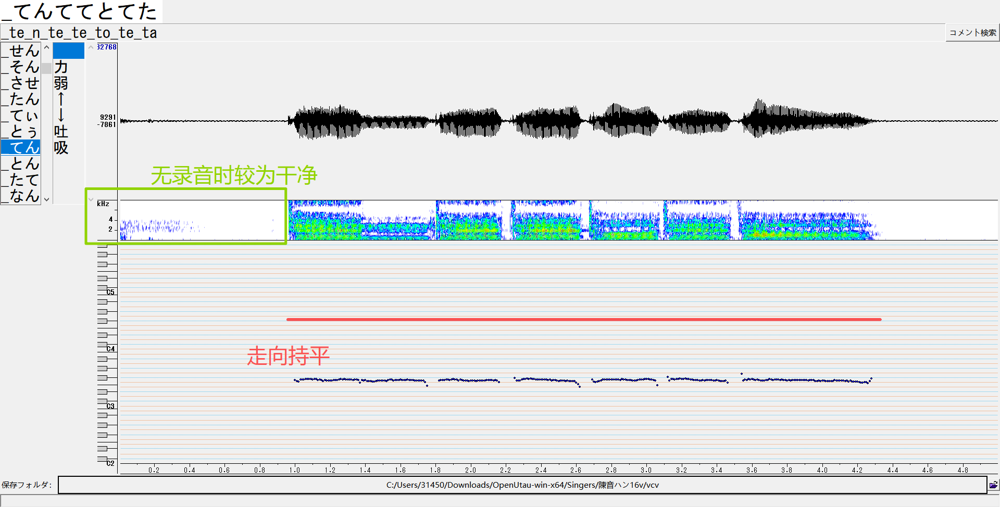
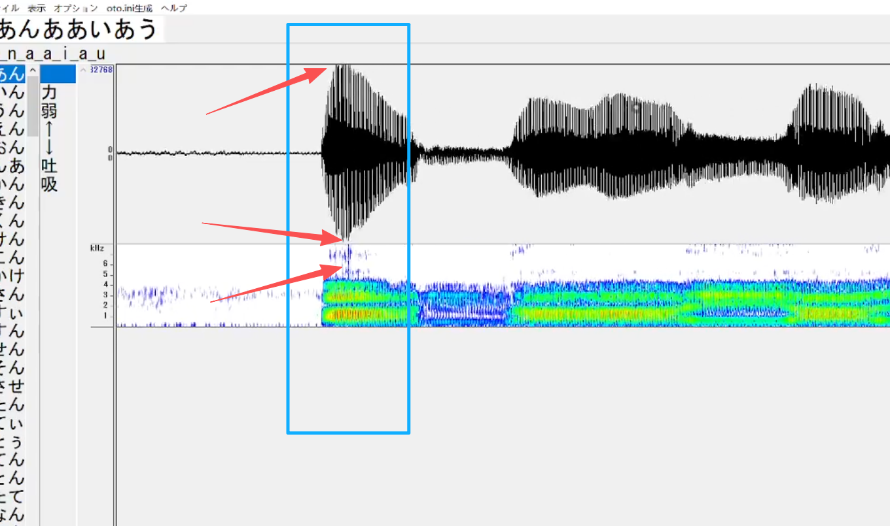
⚠️ 左图是典型的不良示例：响度图剧烈起伏，纹理图出现多条细竖线（爆音）。
9. 常见问题解答
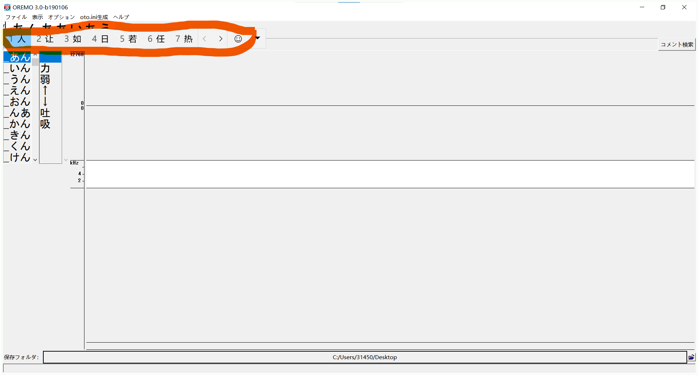
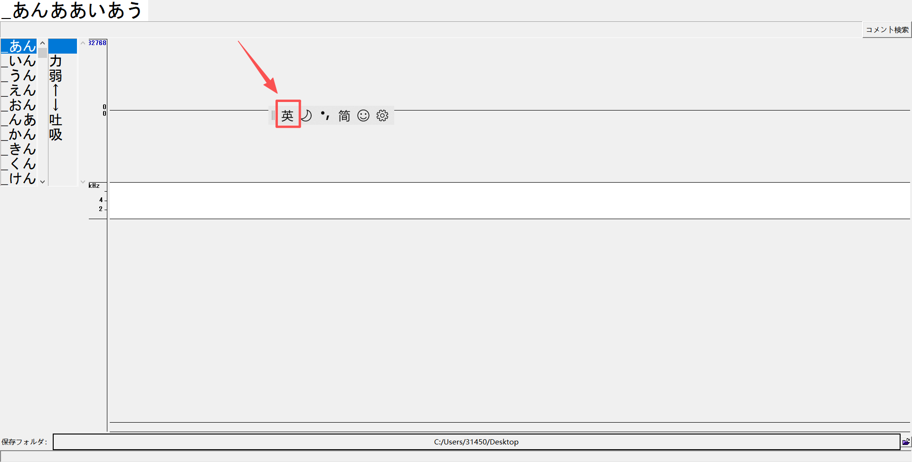
在 UTAU 或 OpenUTAU 中导入处理后的音频，设置好原音设定（oto.ini）。确保每个音素的切割点准确，特别是辅音和元音的过渡位置。

将整理好的 wav 文件和 oto.ini、character.txt 等配置文件放入一个以歌姬名字命名的文件夹中。然后压缩为 zip 包。
注意检查文件路径是否统一为 UTF-8 编码，避免在其他电脑上出现乱码。

在全新的 UTAU 环境下安装你的声库，用测试曲进行连续音和单独音测试。确认所有发音正常、无爆音后，即可准备发布。